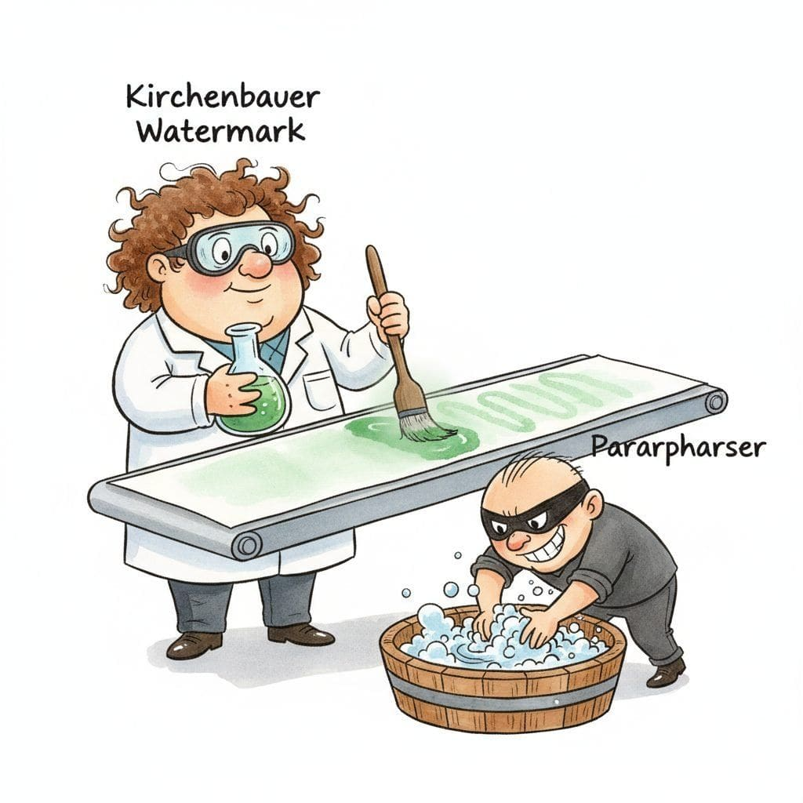

"AIF360 says 0.82, Fairlearn says 0.83, Aequitas says 0.81, and the lawsuit lives in the third decimal place. Pick a library and document why."
Guard, Six-Layer Responsible-AI Toolbelt AI Agent
The responsible AI library landscape in 2026 partitions into six layers: fairness metric and mitigation libraries (AI Fairness 360, Fairlearn, Aequitas, FairML, Themis) that compute disparate-impact-style statistics and train constrained classifiers; explainability libraries (SHAP, LIME, Captum, TransformerLens, BertViz, Inseq, Ecco) that attribute a prediction to inputs or activations; counterfactual generators (DiCE, Alibi, Wachter counterfactuals) that produce minimal-change inputs to flip a prediction; LLM bias and red-team suites (BBQ scripts, BOLD, StereoSet, CrowS-Pairs, HELM bias slice, PyRIT, garak) for generative-model evaluations; watermarking and provenance libraries (Kirchenbauer wmark, SynthID-Text, C2PA, Adobe Content Authenticity SDK, Project Origin) for output attribution; and privacy and federated-learning libraries (Opacus, Google DP, IBM Diffprivlib, Flower, FedML, PySyft) for differential-privacy training and decentralized data. This section is a tour with opinionated pick-when guidance.
Prerequisites
This section assumes the responsible-AI platforms from Section 56.1, the differential-privacy fundamentals from Section 53.3, and the LLM-watermarking techniques from Section 54.2.
The shape of the stack converges on a familiar pattern: a single application typically combines four to seven libraries, each owning one slice (fairness metric, explainability attribution, watermark, privacy noise injection, runtime guard) plus a thin glue layer that ties them to the model and pipeline. Picking each layer well matters because the wrong choice locks out integrations (Captum is PyTorch-only; Fairlearn is sklearn-shaped; SynthID watermarks only work with Google-hosted models) and produces subtle measurement bugs (different fairness libraries disagree on tie-breaking and rounding in disparate-impact ratios, leading to teams arguing past each other).
56.2.1 Fairness metric and mitigation libraries
Run the same dataset through AIF360 and Fairlearn and you may get disparate-impact ratios that disagree at the third decimal. The third decimal is where the lawsuit lives. Fairness libraries compute group-disparity statistics (disparate impact, statistical parity, equal opportunity, equalized odds, demographic parity, predictive parity) and ship bias-mitigation algorithms that apply at one of three stages: pre-processing the data, in-processing during training, or post-processing the predictions. Picking the library shapes both what you can measure and which mitigation knobs you have.
- AI Fairness 360 (AIF360) (IBM Research, 2018; LF AI & Data 2020+) is the most comprehensive open-source fairness toolkit, with 70+ bias metrics and 12+ mitigation algorithms (Reweighing, Prejudice Remover, Adversarial Debiasing, Calibrated Equalized Odds, Reject Option Classification, Disparate Impact Remover). Its objective is to give researchers a uniform API across the whole fairness literature so techniques can be compared apples-to-apples on the same dataset, which matters when reproducing results across papers. The core concept is the BinaryLabelDataset abstraction that lets every metric and algorithm consume the same data shape with declared protected attributes. Pick AIF360 when you want breadth (the largest mitigation algorithm catalog) and Python+R support; for sklearn-native pipelines Fairlearn is leaner.
- Fairlearn (Microsoft, 2018; v0.10 2024) is the sklearn-native fairness toolkit, distinguished by the Reductions approach (train any sklearn estimator subject to a fairness constraint via cost-sensitive reweighting) and a clean MetricFrame API for slicing any metric by sensitive feature. Its objective is to bring fairness assessment into existing sklearn pipelines without rewriting them, which matters when the team is already sklearn-shaped. The core concept is the MetricFrame and the GridSearch/ExponentiatedGradient reductions: every fairness mitigation is "wrap an existing classifier in a constrained training loop". Pick Fairlearn when sklearn is the toolkit, when the Microsoft Responsible AI Dashboard integration matters, or when "I want to bolt fairness onto an existing pipeline with minimal disruption" is the constraint; AIF360 has more algorithms but heavier integration.
- Aequitas (Carnegie Mellon DSSG, 2018) is a Python and R bias-audit toolkit aimed at policy and journalism audiences, distinguished by its "Bias Report" output: a structured set of group-by-group disparity tables and plain-language summaries designed to be read by non-statisticians. Pick Aequitas when the deliverable is a public bias-audit report (NYC LL 144, journalist investigation, civil-society review); for embedding into MLOps, AIF360 and Fairlearn are more API-shaped.
- FairML (Adebayo, 2016) is an older but still cited Python library for auditing model fairness via input perturbation, predating most of the field's standardization. Its objective is to identify which features most influence predictions in ways correlated with protected attributes, which matters as a diagnostic for "where is the bias actually coming from". Pick FairML for historical reproducibility of cited audits; new projects should default to AIF360 or Fairlearn.
- Themis (UMass LASER, 2017) is a software-testing-style fairness toolkit that generates input mutations (swap gender, swap race in features) to test whether a model's predictions change in ways that suggest discrimination. Its objective is to apply mutation-testing thinking to ML fairness, which matters when you want a test-suite-style fairness gate ("the model must not change its prediction when we swap the gender feature on 95% of inputs"). Pick Themis for software-engineering teams comfortable with mutation-testing patterns; for statistical fairness, AIF360 and Fairlearn dominate.
- FairTest (Columbia, 2017) is an unwarranted-association discovery toolkit that finds subgroups in which the model's behavior diverges from average, distinguished by exhaustive subgroup search rather than checking only declared protected attributes. Pick FairTest when intersectional bias (bias against specific combinations like "older women in zip code Z") is the concern; for declared-attribute fairness, AIF360 and Fairlearn suffice.
- FairSD and themis-ml are smaller toolkits worth knowing as alternatives when the bigger libraries do not fit a niche need (FairSD focuses on subgroup-discovery-based bias detection; themis-ml provides sklearn-compatible adversarial debiasing). Pick when the dominant libraries fail and the niche these fill matches your problem.
Let $A$ denote a protected attribute, $Y \in \{0,1\}$ the ground-truth label, and $\hat{Y} \in \{0,1\}$ the model's prediction. The four canonical group-fairness criteria are:
Demographic parity (also called statistical parity or independence): the positive-prediction rate is equal across groups, $P(\hat{Y}=1 \mid A=0) = P(\hat{Y}=1 \mid A=1)$. This is what disparate-impact ratios measure.
Equalized odds (Hardt, Price, Srebro 2016): the true-positive rate and false-positive rate are both equal across groups, $P(\hat{Y}=1 \mid A=a, Y=y) = P(\hat{Y}=1 \mid A=a', Y=y)$ for $a \neq a'$ and $y \in \{0,1\}$.
Equal opportunity: equalized odds restricted to $Y=1$, i.e. only the true-positive rates must match across groups. Weaker than full equalized odds, often the operational target when false-negatives carry the dominant social cost.
The 4/5ths rule (disparate impact): a US-EEOC rule-of-thumb that flags potential discrimination when $\frac{P(\hat{Y}=1 \mid A=0)}{P(\hat{Y}=1 \mid A=1)} < 0.80$ (with $A=0$ the disadvantaged group). Equivalent to demographic-parity-ratio $\geq 0.80$.
Worked example showing the demographic-parity vs equalized-odds tension. Consider a toy dataset with $1000$ rows split into two groups $A=0$ ($n_0 = 500$) and $A=1$ ($n_1 = 500$), with base rates $P(Y=1 \mid A=0) = 0.10$ (50 positives) and $P(Y=1 \mid A=1) = 0.10$ (50 positives), totalling 100 positives and 900 negatives. Suppose the model achieves $\text{TPR}_0 = \text{TPR}_1 = 0.80$ (equalized odds holds for $Y=1$) and $\text{FPR}_0 = 0.05$, $\text{FPR}_1 = 0.15$ (equalized odds fails). Then $P(\hat{Y}=1 \mid A=0) = 0.80 \cdot 0.10 + 0.05 \cdot 0.90 = 0.125$ and $P(\hat{Y}=1 \mid A=1) = 0.80 \cdot 0.10 + 0.15 \cdot 0.90 = 0.215$, giving a demographic-parity ratio of $0.125 / 0.215 \approx 0.58$, well below the 4/5ths threshold. Conversely, post-processing to enforce demographic parity (matching positive rates by raising $\text{FPR}_0$ or shrinking $\text{FPR}_1$) breaks equalized odds. This 1-row demonstration captures the core impossibility: when base rates are equal but error costs differ, the two criteria can be made to align; when base rates differ across groups (as in COMPAS), they cannot, an intuition formalized in Section 56.3.
The math above (TPR, FPR, demographic-parity ratio) is what you would compute by hand; the production form is one call to MetricFrame, which slices any sklearn-style metric by a sensitive attribute and returns a tidy DataFrame plus group-disparity summaries. Prefer Fairlearn when the team is on sklearn and the goal is "drop fairness reporting into an existing classifier" rather than re-architect the training loop; AIF360 is the alternative when you need the broader mitigation-algorithm catalog.
Show code
pip install fairlearn
from fairlearn.metrics import (
MetricFrame, selection_rate, demographic_parity_ratio,
)
from sklearn.metrics import accuracy_score, false_positive_rate
mf = MetricFrame(
metrics={"accuracy": accuracy_score,
"selection_rate": selection_rate,
"fpr": false_positive_rate},
y_true=y_test, y_pred=y_pred, sensitive_features=A_test,
)
print(mf.by_group) # per-group accuracy / selection / FPR
print(mf.difference()) # max-min gap per metric
print(demographic_parity_ratio(y_true=y_test, y_pred=y_pred,
sensitive_features=A_test)) # 0.0-1.056.2.2 Explainability libraries
Explainability libraries answer "why did the model produce this output?" via input attribution (per-feature contribution), local approximation (a simple model that mimics the complex one near a point), or activation analysis (inspecting internal model states).
- SHAP (SHapley Additive exPlanations) (Lundberg & Lee, 2017; SHAP 0.46 2024) is the canonical model-agnostic feature-attribution library, distinguished by the Shapley-value foundation that gives it strong axiomatic properties (efficiency, symmetry, dummy, additivity). Its objective is to allocate a model's prediction across input features in a mathematically principled way, which matters when "why?" must be answerable in regulated contexts (credit, insurance, hiring). The core concept is the SHAP value: the average marginal contribution of a feature across all possible feature orderings, computed efficiently for tree models (TreeSHAP), linear models (LinearSHAP), or any model (KernelSHAP, DeepSHAP, Partition explainers). Pick SHAP as the default model-agnostic attribution; for transformer models specifically, Captum and TransformerLens are deeper.
- LIME (Local Interpretable Model-agnostic Explanations) (Ribeiro et al., 2016) is the precursor to SHAP and the simpler but less rigorous local-explanation library. Its objective is to approximate a complex model near a specific prediction with a sparse linear model that humans can read directly, which matters when "name the top three features driving this prediction" is the deliverable. The core concept is the local surrogate: perturb the input, run the model, fit a sparse linear regression to the perturbation-output relationship. Pick LIME for tabular and text data when SHAP is too slow for interactive use; for production governance SHAP's axiomatic guarantees are usually preferred.
- Captum (PyTorch / Meta, 2019) is the canonical PyTorch-native explainability library with 30+ attribution methods (Integrated Gradients, DeepLIFT, GradientSHAP, Layer-LRP, NoiseTunnel, Occlusion, Feature Ablation). Its objective is to make every published deep-learning attribution method usable on any PyTorch model with one API, which matters because the explainability literature is fragmented across implementations. The core concept is the unified Attribution interface: every method takes (model, input) and returns per-input attributions, with NoiseTunnel-style smoothing layered on top. Pick Captum for any PyTorch model that needs deep-learning-specific attribution (Integrated Gradients for images, LRP for NLP); for tree models SHAP is the natural choice.
- TransformerLens (Nanda et al., 2022) is the mechanistic-interpretability library for transformer models, distinguished by activation hooks at every layer and head plus utilities for circuit-style analysis (path patching, causal scrubbing, sparse autoencoder probing). Its objective is to make mechanistic-interpretability research (the program of reverse-engineering specific circuits inside transformers) tractable on the same model loaded in Hugging Face, which matters as the field shifts from input-attribution to circuit-level understanding. The core concept is the HookedTransformer wrapper that exposes every internal activation as a hookable point. Pick TransformerLens when mechanistic interpretability (induction heads, sparse autoencoders, circuit-level safety analysis) is the goal; for production explainability SHAP and Captum are more conventional.
- BertViz (Vig, 2019) is the canonical attention-visualization library for transformer models, distinguished by interactive HTML widgets showing head-by-head, layer-by-layer attention patterns. Its objective is to make "what is each attention head paying attention to?" inspectable in a Jupyter notebook, which matters as a teaching and debugging tool even though attention-as-explanation is contested. Pick BertViz for educational and exploratory transformer inspection; for rigorous attribution, Captum or TransformerLens.
- Inseq (Sarti et al., 2023) is a sequence-generation explainability toolkit built on Hugging Face Transformers, with feature attribution methods adapted to encoder-decoder and decoder-only models (saliency, integrated gradients, attention rollout) plus contrastive explanations for "why this token over that token?". Its objective is to bring SHAP-style attribution to generative model outputs, which matters because input-attribution for generation is its own research area (different from classification attribution). Pick Inseq for explainability on text generation; for transformer mechanistic work, TransformerLens.
- Ecco (Alammar, 2021) is a small but elegant library for visualizing language-model internals (token attribution, hidden-state evolution across layers), distinguished by polished visualizations targeted at writers and educators rather than researchers. Pick Ecco for blog-style or teaching visualizations of LLM internals; for production-grade attribution Captum or Inseq.
- ELI5 and InterpretML (Microsoft, 2019) are two more general-purpose explainability toolkits: ELI5 for inspecting sklearn pipelines including text features, InterpretML for Microsoft's Explainable Boosting Machine (EBM) plus a unified blackbox-explainer interface. Pick InterpretML when EBMs (glass-box GBMs with similar accuracy to XGBoost) are the model and a fully transparent classifier is the goal; pick ELI5 for quick sklearn inspection.
For a model with feature set $F$ and a value function $v(S)$ giving the model's expected output when features in $S \subseteq F$ are fixed to their input values (and the rest marginalized), the SHAP value of feature $i$ is the Shapley value from cooperative game theory (Shapley 1953):
$$\phi_i = \sum_{S \subseteq F \setminus \{i\}} \frac{|S|!\,(|F|-|S|-1)!}{|F|!} \,\bigl[v(S \cup \{i\}) - v(S)\bigr]$$
This is the unique attribution that satisfies four axioms (Lundberg & Lee 2017). Efficiency: the attributions sum to the prediction minus the baseline, $\sum_i \phi_i = v(F) - v(\emptyset)$. Symmetry: if two features contribute identically to every coalition, they receive equal attribution. Dummy: a feature that adds nothing to any coalition receives $\phi_i = 0$. Additivity: for a sum of two models $f_1 + f_2$, the attributions add, $\phi_i^{f_1+f_2} = \phi_i^{f_1} + \phi_i^{f_2}$, which is what makes SHAP compose over ensemble methods.
The exact computation is $O(2^{|F|})$, infeasible beyond ~25 features. KernelSHAP (model-agnostic) approximates via weighted linear regression on sampled coalitions, with cost $O(K \cdot |F|)$ for $K$ samples; in practice $K \in [200, 10000]$ trades variance for speed. TreeSHAP (tree-ensemble-specific, Lundberg et al. 2020) exploits the tree structure to compute exact Shapley values in $O(T L D^2)$ per prediction, where $T$ is number of trees, $L$ leaves, $D$ depth, making it tractable on production-scale XGBoost / LightGBM models. The factor-of-thousand speedup is why TreeSHAP is the default explainer when the model is tree-shaped, and why teams on neural models often distill them through a tree surrogate before explaining.
56.2.3 Counterfactual generators
Counterfactual explanations answer "what minimal change to the input would have changed the prediction?" They are an alternative to feature attribution that is often more actionable for end users (telling a denied credit applicant which feature value would have flipped the decision).
- DiCE (Diverse Counterfactual Explanations) (Microsoft Research, 2020) is the canonical counterfactual library, distinguished by generating a diverse set of counterfactuals (not just one minimal-change input) so users see multiple alternatives. Its objective is to make counterfactuals actionable by giving end users options ("you could have been approved if your income were higher OR your debt-to-income ratio lower"), which matters when single counterfactuals feel arbitrary. The core concept is a diversity-and-proximity-balanced optimization: search the input space for minimal-change points that flip the prediction and differ from each other. Pick DiCE as the default counterfactual generator; for adversarial-counterfactual research, Alibi has more methods.
- Alibi (Seldon, 2019) is a broader explainability library covering anchor explanations, counterfactuals (CFProto, CounterfactualRL, CEM), contrastive explanations, and integrated-gradients-style attribution. Its objective is to be the production-grade counterfactual+explainability library tied to the Seldon Core model-serving stack, which matters when you serve models on Seldon and want first-party integration. Pick Alibi when Seldon is the serving layer; for general counterfactuals, DiCE is the more focused tool.
- Wachter counterfactuals (Wachter et al., 2017) are the original "counterfactual explanations for GDPR Article 22" reference, implemented in several libraries. The objective is to compute the nearest input that produces a different prediction, satisfying the legal interpretation of "explanation" under GDPR right-to-explanation. Most modern libraries (DiCE, Alibi) ship Wachter-style methods alongside others; pick a Wachter implementation when GDPR compliance argumentation specifically references the Wachter approach.
- CARLA (Counterfactual And Recourse LibrAry) (Pawelczyk et al., 2021) is a research-oriented counterfactual library focused on algorithmic recourse: counterfactuals that respect feature actionability (you can change your savings but not your age) and provide a path the user can actually take. Pick CARLA when actionability constraints matter and the deliverable is a user-facing recourse recommendation; for general counterfactuals, DiCE is the lighter pick.
56.2.4 LLM bias and red-team suites
LLM-era bias evaluation requires datasets and harness scripts beyond the tabular fairness libraries. The 2024-26 toolkit clusters around dataset-specific evaluation scripts and red-team automation frameworks.
- BBQ (Bias Benchmark for QA) evaluation scripts (Parrish et al., 2022) are the canonical harness for the BBQ question-answering bias dataset (Section 56.3), measuring how often a model's answers to ambiguous questions rely on social-bias stereotypes when context is insufficient. Its objective is to surface bias in QA models that "lean on the stereotype" when context is missing, which matters because most production QA happens under ambiguity. Pick BBQ scripts as the canonical QA-bias evaluation; the dataset details are in 56.3.
- BOLD (Bias in Open-ended Language generation Dataset) evaluation scripts (Dhamala et al., 2021) are the harness for measuring bias in open-ended generation (toxicity, sentiment, regard) across professions, gender, race, religion, and political ideology. Pick BOLD scripts for generation-side bias; pair with HELM bias slices for a broader picture.
- StereoSet evaluation scripts (Nadeem et al., 2021) measure stereotypical-bias preference in masked-LM and generative-LM completions. Pick StereoSet for stereotype-preference measurement; note the well-known critique that some StereoSet items themselves encode contested stereotypes, so newer benchmarks often supplement rather than replace it.
- CrowS-Pairs evaluation scripts (Nangia et al., 2020) measure how often an LM prefers a stereotypical sentence over its less-stereotypical counterpart across nine bias categories (race, gender, sexual orientation, religion, age, nationality, disability, physical appearance, socioeconomic status). Pick CrowS-Pairs alongside StereoSet for masked-LM bias coverage.
- HELM bias and safety slices (Stanford CRFM, 2022+) are the canonical large-scale benchmark suite, with bias and toxicity sub-tasks (BBQ, BOLD, RealToxicityPrompts) wired into a uniform evaluation harness across 100+ models. Pick HELM when you want a published leaderboard comparison; for in-house evaluations, individual harnesses are leaner.
- PyRIT (Python Risk Identification Tool) (Microsoft AI Red Team, 2024) is Microsoft's open-source red-team automation toolkit for LLMs, with orchestrators for multi-turn jailbreak attempts, prompt-injection probes, and content-policy violations. Its objective is to make adversarial-testing scaleable beyond manual red-teaming, which matters when policy compliance must be checked on every model release. The core concept is the orchestrator-and-target pattern: orchestrators (jailbreak strategies) attack targets (LLM endpoints) and scorers (classifier or another LLM) judge outcomes. Pick PyRIT when systematic LLM red-teaming is the goal; for security-team-focused testing, garak is the alternative.
- garak (Generative AI Red-Team and Assessment Kit) (NVIDIA / Leon Derczynski, 2023) is an open-source LLM vulnerability scanner with 100+ probes covering hallucination, jailbreaks, prompt injection, data leakage, toxicity, and refusal-suppression. Pick garak for security-flavored LLM probing (think nmap for LLMs); pair with PyRIT for fairness-and-policy-flavored testing.
- promptfoo (promptfoo, 2023) is a YAML-driven LLM testing tool with a plugin for bias and red-team evaluations. Pick promptfoo when LLM testing is part of CI and the YAML config style fits the team; for research-grade red-teaming PyRIT and garak are deeper.
56.2.5 Watermarking libraries
Watermarking libraries embed a detectable signal in model outputs (images, audio, text) so downstream tools can attribute provenance. The 2024-26 watermarking literature has split into text watermarks (Kirchenbauer green/red list, SynthID-Text, undetectable variants) and image / audio watermarks (SynthID, Stable Signature, AudioSeal).
- Kirchenbauer LM watermarking (Kirchenbauer et al., 2023) is the canonical open-source reference implementation of the green-list / red-list text watermark, distinguished by being the first widely-adopted method to embed a statistical signal into LM outputs by biasing logits toward a green-list of tokens at each step. Its objective is to make LM-generated text statistically detectable by holding the green-list seed, which matters for synthetic-content attribution and academic-integrity uses. The core concept is the per-step partition of the vocabulary into a green and red list (seeded by the previous token) plus a small logit boost on green tokens, yielding a per-token Bernoulli signal recoverable by holding the seed. Pick Kirchenbauer wmark for open-source text-watermarking research; for production text watermarking SynthID-Text is the managed pick.
- SynthID-Text (Google DeepMind, 2024; open-sourced in Transformers 2024) is the production text watermarker shipped with Gemini and open-sourced via the Hugging Face Transformers library. Its objective is to embed a detectable text watermark with minimal quality loss while remaining robust to paraphrasing and editing, which matters as Google ships the watermark across Gemini outputs by default. The core concept is a tournament-based sampling that biases the random choice between equally-good tokens toward those that satisfy a watermark function. Pick SynthID-Text when you use Gemini or Hugging Face Transformers' watermark APIs; for non-Google production text-watermarking, the open Kirchenbauer reference is the alternative.
- SynthID for images and audio (Google DeepMind, 2023-2024) is the multimodal watermarking system applied to Imagen and Lyria outputs, distinguished by perceptually-invisible image and audio watermarks robust to compression and minor edits. Pick SynthID when Google generation models are the source; for non-Google models, see Stable Signature and AudioSeal.
- Stable Signature (Meta FAIR, 2023) is a fine-tuning-based image watermark for diffusion models that bakes the watermark into the model weights themselves (rather than adding it post-hoc to outputs). Pick Stable Signature when you fine-tune your own image-diffusion model and want a robust embedded signal; for post-hoc watermarking, generic image-watermarking libraries are simpler.
- AudioSeal (Meta FAIR, 2024) is an audio watermarker designed for proactive detection of AI-generated speech and music. Pick AudioSeal for synthetic-audio attribution; pair with provenance metadata (C2PA Audio) for a defense-in-depth provenance story.
- Aaronson and undetectable watermarks (Aaronson, 2023; Christ et al., 2023) are research-grade text watermarking schemes targeting undetectability under various adversary models. Pick when watermarking research is the use case (the Aaronson scheme was the basis of OpenAI's discussed text watermark; undetectable variants formalize what "undetectable without the key" means).
The recurring worry with all of these is robustness to a determined adversary, who will try to wash the watermark out by paraphrasing or re-editing the content, as Figure 56.2.2 dramatizes.

56.2.6 Provenance and content-credentials libraries
Provenance libraries record where a piece of content came from and how it was edited, complementing watermarks by attaching cryptographically-signed metadata rather than embedding a statistical signal.
- C2PA (Coalition for Content Provenance and Authenticity) specification and libraries (C2PA, 2021+) are the open standard for content credentials, distinguished by an industry-wide coalition (Adobe, Microsoft, Google, Sony, BBC, Reuters, OpenAI, Anthropic) and a manifest format that records authorship, edits, and AI involvement as cryptographically signed claims. Its objective is to be the "HTTPS for content provenance" so any consumer tool can verify authenticity without trusting a single vendor, which matters as AI generation spreads. The core concept is the C2PA Manifest: a JSON-LD provenance record signed by a hardware or software identity, embedded in the file's metadata. Pick C2PA when interoperable cross-vendor provenance matters; for vendor-specific provenance, the Adobe and Project Origin SDKs are the implementations.
- Adobe Content Authenticity SDK (c2pa-rs) (Adobe / C2PA, 2022+) is the Rust implementation of C2PA published as open source, with bindings to Python, JavaScript, and other languages. Its objective is to give application developers a working library to read, validate, and write C2PA manifests, which matters because the spec without a reference implementation is unusable. Pick c2pa-rs as the default implementation for any application embedding or verifying content credentials.
- Project Origin (BBC / CBC / Microsoft / NYT, 2019+) is the news-media-focused predecessor and contributor to C2PA, providing tooling and policies for newsroom content provenance. Pick Project Origin's tooling when the use case is editorial newsroom provenance and the broader C2PA ecosystem is being evaluated alongside.
- Numbers Protocol and other blockchain-anchored provenance systems add a blockchain anchor for C2PA-style manifests so the signing key cannot be silently revoked. Pick when the use case (NFTs, evidentiary photos, legal documents) genuinely needs an immutable anchor; for most provenance, C2PA's signed-manifest model is sufficient.
- OpenAI and Anthropic C2PA integrations (2024+) are the production integrations: OpenAI signs DALL-E 3 and GPT-Image-1 outputs with C2PA credentials; Anthropic and others have committed to similar workflows. Pick by which generation model you use; the verification side (reading the manifest) is a single library call against any compliant content.
56.2.7 Differential privacy and federated learning libraries
Privacy-preserving ML libraries split into differential privacy (training with calibrated noise so any individual's data cannot be inferred from the model) and federated learning (training across devices or organizations without centralizing the data).
- Opacus (Meta / PyTorch, 2020) is the canonical PyTorch differential-privacy library, distinguished by an SGD-replacement (PrivacyEngine) that adds per-sample gradient clipping and Gaussian noise with one line of code. Its objective is to make DP-SGD training a drop-in change to existing PyTorch code, which matters because DP-SGD is otherwise tedious to implement correctly. The core concept is the PrivacyEngine: wrap the optimizer, declare the (epsilon, delta) budget, and Opacus handles the rest. Pick Opacus for PyTorch differential-privacy training; for TensorFlow, the Google DP library is the analog.
- Google Differential Privacy library (Google, 2019+) is Google's open-source DP toolkit including DP-SGD for TensorFlow, the DP query engine (DPQuery), and SQL-on-DP for analytics. Its objective is to support both DP training (TensorFlow Privacy) and DP analytics (PipelineDP for BigQuery and Apache Beam), which matters when both training and reporting need DP guarantees. Pick when TensorFlow is the framework or when DP analytics on BigQuery is the use case.
- IBM Differential Privacy Library (diffprivlib) (IBM, 2019+) is the sklearn-compatible DP library with DP versions of LogisticRegression, GaussianNB, KMeans, and PCA, plus DP statistics. Pick diffprivlib when sklearn pipelines need a DP overlay; for deep learning, Opacus or Google DP.
- PySyft (OpenMined, 2018+) is the federated-learning and privacy-preserving ML framework with support for secure multi-party computation, homomorphic encryption, and federated training, plus the higher-level Syft Domain server for "compute on data you cannot see" workflows. Pick PySyft for research and pilot deployments of privacy-preserving ML where the data must never leave the data owner.
- Flower (Flower Labs, 2020) is a federated-learning framework optimized for production cross-device and cross-silo deployments, distinguished by language-agnostic clients (Python, C++, Java, JavaScript) and integration with PyTorch, TensorFlow, JAX, and Hugging Face. Pick Flower as the production federated-learning framework in 2026 (most active community); for research, PySyft.
- FedML (FedML Inc., 2020+) is a federated-learning platform with both an open-source framework and a managed cloud product, distinguished by support for large-scale cross-organization training including LLM-fine-tuning federations. Pick FedML when the use case is cross-organization LLM fine-tuning at scale; for smaller deployments, Flower has less platform overhead.
- NVIDIA FLARE (NVIDIA, 2021) is NVIDIA's federated-learning framework with strong healthcare and life-sciences traction (multi-hospital model training without data sharing). Pick NVFlare for healthcare federations where NVIDIA's vertical investments (Clara, MONAI) align.
- TensorFlow Federated (Google, 2018) is Google's open-source federated-learning framework with strong cross-device simulation. Pick TFF when TensorFlow is the framework and cross-device simulation is the workflow; for cross-silo production deployments, Flower has more momentum.
A randomized mechanism $M$ is $(\epsilon, \delta)$-differentially private (Dwork et al. 2006, 2014) if for any two neighboring datasets $D, D'$ differing in one record and any measurable output set $S$,
$$\Pr[M(D) \in S] \le e^{\epsilon} \,\Pr[M(D') \in S] + \delta.$$
Operationally, an adversary observing $M$'s output cannot distinguish whether any single individual was in the training set with confidence better than the bound above; $\epsilon$ governs the multiplicative leakage and $\delta$ the catastrophic-failure probability (usually $\delta \ll 1/n$ where $n$ is dataset size). The Gaussian mechanism achieves $(\epsilon, \delta)$-DP by adding noise $\mathcal{N}(0, \sigma^2 I)$ to a function of sensitivity $\Delta_2$ (the maximum L2-norm change in output when one record is added or removed), with noise scale $\sigma \ge c \cdot \Delta_2 / \epsilon$ where $c = \sqrt{2 \ln(1.25/\delta)}$ for the basic mechanism (tighter for the moments accountant, Abadi et al. 2016). This is what Opacus applies during DP-SGD: per-sample gradients are clipped to norm $C$ (bounding $\Delta_2$), then Gaussian noise with the calibrated $\sigma$ is added to the aggregated mini-batch gradient. Across $T$ training steps the privacy cost composes; the Rényi-DP / moments accountant lets practitioners report a final $(\epsilon, \delta)$ rather than the loose $T \cdot \epsilon$ from naive composition.
Typical published $\epsilon$ values for production NLP: Apple's on-device learning operates around $\epsilon \approx 8$ per release, Google's gboard next-word prediction reports $\epsilon$ in the single-digit-to-low-double-digit range, and the Census Bureau's 2020 disclosure used $\epsilon \approx 19.6$ across the entire data product. The folk threshold $\epsilon \le 1$ corresponds to research-grade strong privacy with substantial accuracy loss; $\epsilon \in [1, 10]$ is the production-NLP working range; $\epsilon > 100$ retains the formal label but provides little meaningful protection. Tuning $\epsilon$ in Opacus is therefore the consequential decision that sets accuracy-vs-leakage; library defaults are starting points, not policy.
56.2.8 A canonical 2026 responsible-AI stack
Who: A 2026 production ML team adding responsible-AI tooling to an existing model pipeline.
Situation: The team had to satisfy governance reviewers (Section 56.1's platform layer), red-teamers, and privacy counsel, while continuing to ship models on the existing cadence.
Problem: The responsible-AI library landscape is large and overlapping, and ad-hoc adoption produced inconsistent CI gates, missing audit evidence, and per-team library wars.
Dilemma: Either let each team pick its own libraries (fragmentation, regulator-unfriendly inconsistency) or impose a single mandated stack and risk overreach.
Decision: They standardized on a "boring-but-correct" library stack rather than chasing novelty.
How: The stack was: Fairlearn for sklearn-shaped fairness assessment and the Reductions mitigation; SHAP for tabular model explainability plus Captum for any PyTorch-based deep model; DiCE for counterfactual explanations to end users; HELM bias slices, BBQ, BOLD, CrowS-Pairs for LLM bias evaluation; PyRIT or garak for systematic red-teaming; SynthID-Text or Kirchenbauer wmark for text watermarking; c2pa-rs / Adobe Content Authenticity SDK for provenance manifests; Opacus for any differential-privacy fine-tuning.
Result: Every model release shipped with the evidence the governance platform expected (fairness slices, explanations, bias suite outputs, red-team report, provenance manifest), with no novel libraries to justify to reviewers.
Lesson: The wins in responsible-AI tooling are mostly in wiring boring libraries into CI and the model registry so every release ships the evidence the governance platform expects, not in adopting the latest research library.
A subtle and important fact: AIF360, Fairlearn, and Aequitas computing the same disparate-impact ratio on the same dataset can produce numbers that differ by 1-3 percentage points due to different tie-breaking, rounding, and treatment of NaN protected attributes. This is rarely a bug; it is the consequence of underspecified definitions in the fairness literature. In governance settings, this means "the fairness number" must always be reported with the library and version that computed it. Production teams who switch libraries mid-program often discover they have moved their reported fairness score in ways that are not real model changes.
SHAP, LIME, Captum, and friends compute attributions according to specific axioms; different libraries' attributions can disagree even on the same model and input. The right way to use these is as one piece of evidence in a fairness or governance argument, not as ground truth about model behavior. The mechanistic-interpretability community (TransformerLens, sparse autoencoders, circuit-level work) is the deeper effort to extract ground truth, but for production explainability the conventional libraries (SHAP, Captum) are the de facto standard.
For a team that needs to land fairness metrics, mitigation, and a regulator-readable report in a single afternoon, the canonical three-library stack covers the surface with no overlap. AIF360 supplies the broadest metric catalog (70+ statistics) and the largest mitigation algorithm set (Reweighing, Adversarial Debiasing, Calibrated Equalized Odds), making it the default when reproducing a published technique or sweeping pre-/in-/post-processing options. Fairlearn supplies the sklearn-native MetricFrame for slicing any metric by sensitive attribute, the ExponentiatedGradient and GridSearch reductions for constrained training, and tight integration with Microsoft Responsible AI Dashboard, making it the default for "bolt fairness onto an existing pipeline". Aequitas supplies the policy-style Bias Report (group-by-group disparity tables with plain-language narrative) accepted by auditors and journalists under NYC LL 144 and similar regimes, making it the default for the audit deliverable. The three are complementary not redundant: AIF360 for the algorithm library, Fairlearn for the pipeline integration, Aequitas for the report. All three are LF AI & Data Foundation projects, all Apache 2.0, all install with one pip install each. Adopt this trio first; reach for the niche libraries (FairTest, Themis, FairSD) only when a specific failure mode the trio cannot diagnose appears.
Show code
# Three-library fairness pass: metric, mitigation, and audit report.
from fairlearn.metrics import MetricFrame, selection_rate
from sklearn.metrics import accuracy_score
# 1. Fairlearn: slice any metric by sensitive attribute.
frame = MetricFrame(metrics={"accuracy": accuracy_score,
"selection_rate": selection_rate},
y_true=y_test, y_pred=y_pred,
sensitive_features=A_test)
print(frame.by_group) # per-group disparity table
# 2. AIF360: reweighing mitigation on the training set.
from aif360.algorithms.preprocessing import Reweighing
rw = Reweighing(unprivileged_groups=[{"sex": 0}],
privileged_groups=[{"sex": 1}])
ds_rebalanced = rw.fit_transform(ds_train)
# 3. Aequitas: regulator-readable bias report.
from aequitas.group import Group
xtab, _ = Group().get_crosstabs(df_predictions)
56.2.9 Licensing and deployment considerations
Most of the libraries in this section are permissively licensed (Apache 2.0 or MIT), with a few exceptions to know:
- SynthID-Text in Hugging Face Transformers is Apache 2.0-licensed in the open-source release, but the Google-hosted SynthID detector is a managed service; "watermark with SynthID-Text" is open but "detect SynthID-Text watermarks with Google's detector" is managed.
- Stable Signature is Apache 2.0 but ties to specific diffusion-model architectures; using it on a different architecture requires re-implementing the fine-tuning loss.
- C2PA as a specification is openly published; the c2pa-rs implementation is Apache 2.0. The trust-list of accepted signing identities is governed by the C2PA consortium and is a separate adoption question.
- Opacus and the Google DP library are Apache 2.0 but require care: a DP-trained model has accuracy degradation that grows with the privacy budget (epsilon), and library defaults are not always tuned for your data scale.
- Flower is Apache 2.0; FedML's open-source release is Apache 2.0 with the managed product offered commercially. NVFlare is Apache 2.0 with NVIDIA hardware as the natural deployment target.
The most common deployment failure across these libraries is operational: a fairness library produces metrics that nobody on the team reviews, an explainability library produces explanations nobody surfaces to users, a watermarking library embeds signals nobody verifies. The library is the easy part; the integration into the team's review and incident-response workflows is the hard part. Section 56.1's governance platforms exist partly to close this gap.
56.2.10 Library evaluation checklist
The questions to ask when picking among multiple libraries in the same layer:
- Active maintenance: when was the last meaningful release? Several fairness libraries (Themis, FairML) are essentially unmaintained even though they remain useful for reproducibility.
- Framework compatibility: does the library work with your training framework? (Opacus is PyTorch; Captum is PyTorch; Fairlearn is sklearn; the Google DP library is TensorFlow.)
- Reproducibility: does the library version-pin its randomness so two runs produce the same numbers?
- Citation footprint: how often is this library cited in published audits and regulatory filings? Libraries with citation history have an easier time being accepted by auditors.
- Integration with model registry: does the library produce artifacts (model cards, bias reports) that your model registry can ingest?
- Performance at scale: SHAP on a 1M-row dataset and a tree model is fast; SHAP on a 1M-row dataset and a transformer is slow. Profile before committing.
- Domain coverage: does the library cover your data modality (tabular, text, image, time-series) or only one?
- Vendor independence: is the library open-source community-driven or controlled by one vendor? Vendor-controlled libraries can change direction post-acquisition.
What's Next?
In the next section, Section 56.3: Datasets and Benchmarks, we build on the material covered here.